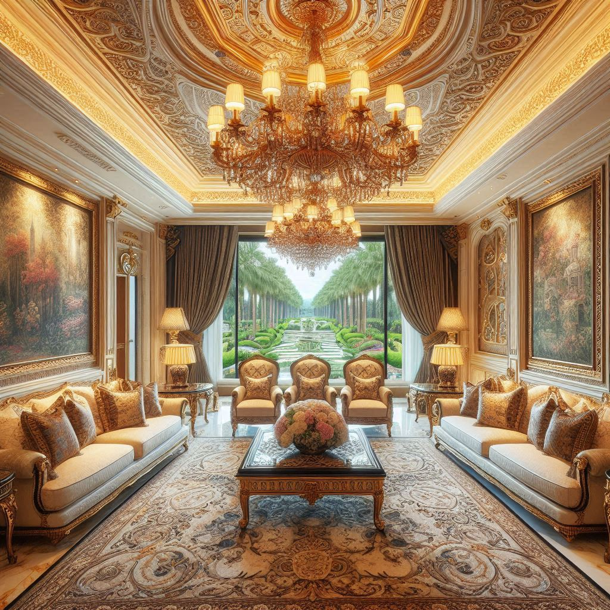
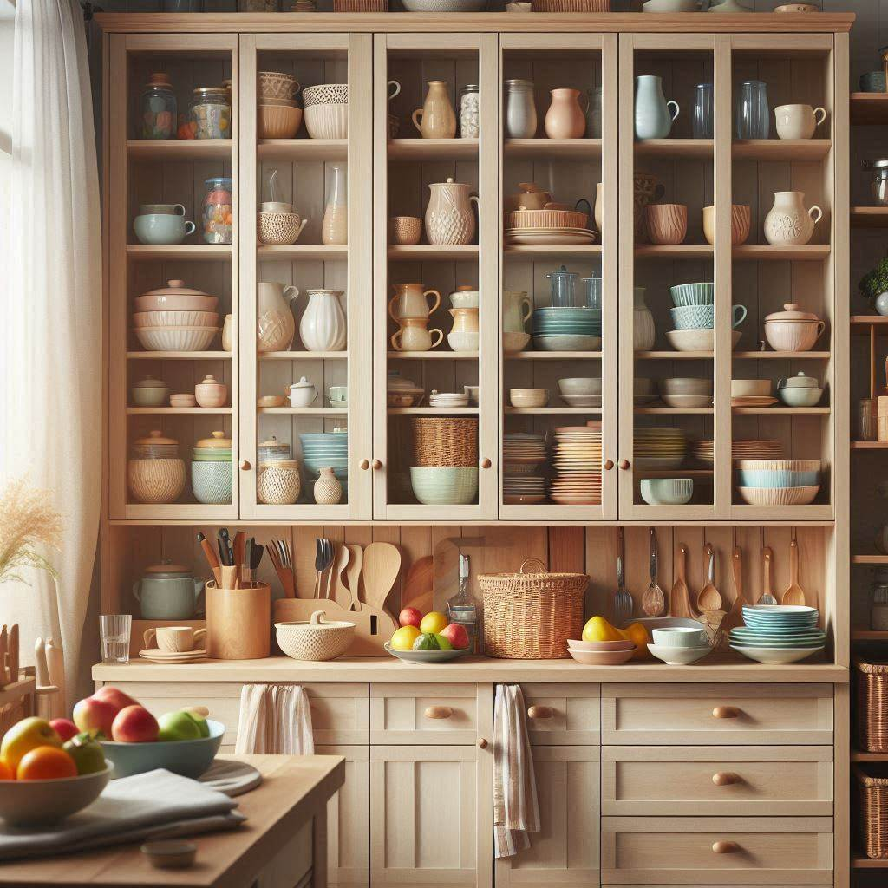
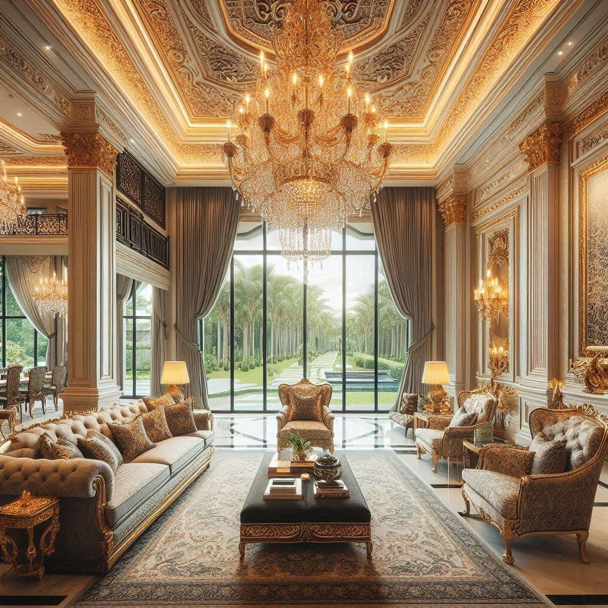
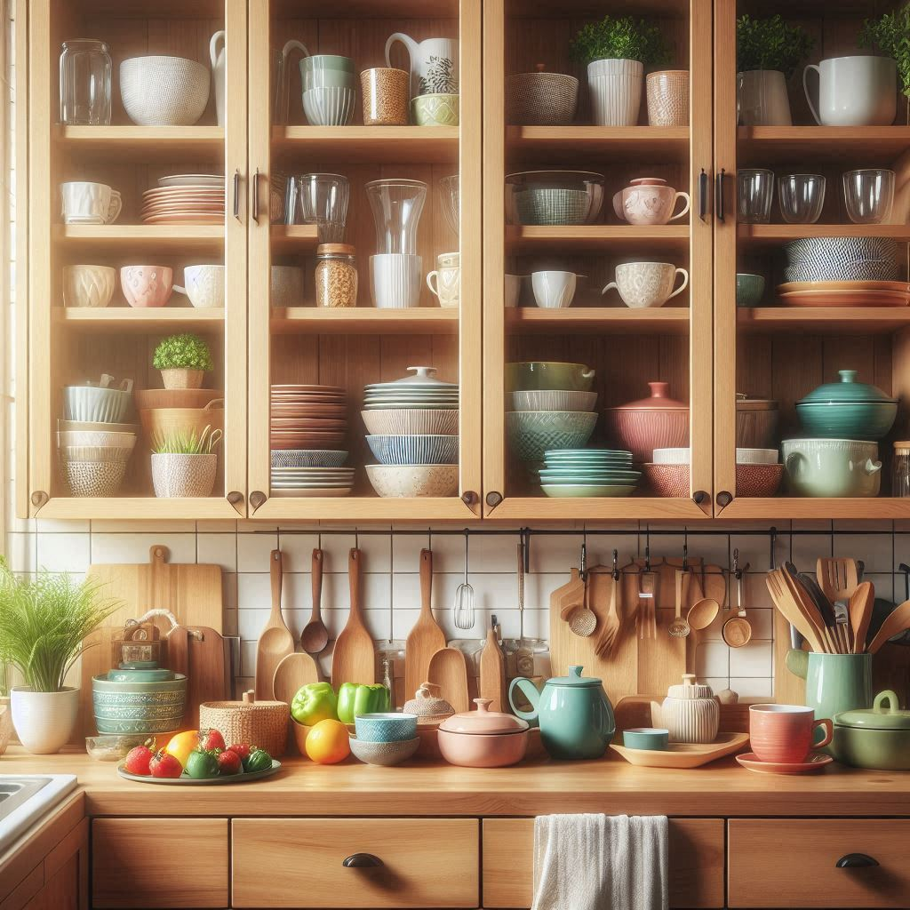

|  |  |  |  |
| 木作裝潢 | 木作廚具 | 施作方式 | 研習心得 |
木作櫃：
由木工師傅根據設計圖或現場丈量後，將板材帶到現場進行加工而成。
優點：靈活度高，可以根據現場狀況調整造型、尺寸，完全貼合空間格局。
缺點：施工期較長，產生粉塵和甲醛，需要定期保養。
系統櫃：
根據設計師的圖紙規劃並丈量數據訂製，但在工廠裁切、封邊後，再運到現場組裝。
優點：施工現場不易產生污染，施工時間快速。
缺點：造型變化較少，承重力較低，需要特別注意支撐。
總之，你可以根據自己的需求選擇適合的廚具，無論是木作櫃還是系統櫃，都有其獨特的優勢和適用場景。